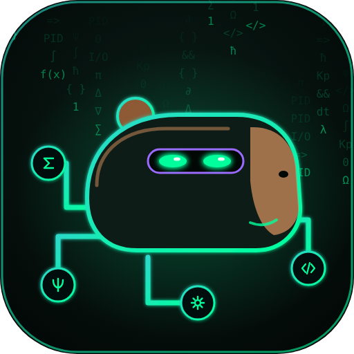

Matemática, física, automação e programação para problemas reais
Coletivo sem fins lucrativos de ex-estudantes de Engenharia Física da UNILA. Pesquisa e otimização de processos com código, sensores e inteligência artificial — por hobby e com código aberto.

Da sala de aula para o mundo
A CapivaTech começou como projeto de uma disciplina e virou um compromisso: usar o que aprendemos para resolver problemas de verdade.
Uma disciplina
Nasceu na disciplina de Desenvolvimento de Projetos do curso de Engenharia Física da UNILA, em Foz do Iguaçu.
Um hobby com propósito
Depois da graduação, os fundadores decidiram continuar: hoje é mantida por hobby, sem fins lucrativos e sem vínculo comercial.
Pesquisa e otimização
O foco é resolver problemas da academia, da sociedade e de outras necessidades, otimizando processos com ciência e tecnologia.
O que fazemos
Juntamos o rigor da física e da matemática com a prática da engenharia e da computação.
Matemática e otimização
Modelagem, métodos numéricos, estatística e otimização para medir e melhorar processos.
Física computacional
Simulação de materiais, estrutura eletrônica e fenômenos físicos, do modelo ao resultado publicável.
Automação e controle
Sistemas que medem, decidem e agem sozinhos: controle PID, CLPs, robótica e processos industriais.
Programação e software científico
Ferramentas abertas, análise de dados e aplicações para laboratórios, grupos de pesquisa e estudantes.
IoT e instrumentação
Sensores, microcontroladores e coleta de dados em tempo real, do protótipo à estação em campo.
Inteligência artificial
Aprendizado de máquina para prever, classificar e apoiar decisões, com dados bem tratados.
Como trabalhamos
Código aberto
O que criamos fica disponível para qualquer pessoa estudar, usar e melhorar.
Sem fins lucrativos
Trabalhamos por hobby e por propósito; a recompensa é o problema resolvido.
Problemas reais
Partimos de uma necessidade concreta de um laboratório, de uma escola ou da comunidade.
Crédito e colaboração
Trabalhamos com pesquisadores, estudantes e organizações, dando crédito a cada pessoa.
Projetos
Plataforma de dados meteorológicos
Estação meteorológica IoT com ESP8266 e energia solar: vento, temperatura, umidade, pressão e chuva, com armazenamento local e envio pela internet. Base para estudos de geração solar.
ver no GitHub →BrUMaRe
Software livre para analisar cálculos de estrutura eletrônica (CASTEP, VASP, SIESTA, Quantum ESPRESSO e ORCA). Projeto de um dos fundadores, Bruno Macedo, desenvolvido no mestrado.
abrir o BrUMaRe →O próximo pode ser o seu
Tem um problema na pesquisa, na universidade ou na comunidade que a tecnologia pode resolver? Queremos ouvir.
./falar_conoscoQuem criou
Ex-estudantes de graduação em Engenharia Física da UNILA, que criaram a CapivaTech na disciplina de Desenvolvimento de Projetos.
Bruno Henrique Dourado Macedo
Engenheiro Físico · mestrando em Física Aplicada (PPGFISA, UNILA)
site pessoal →Felipe Camargo
Engenharia Física · UNILA
Vamos resolver juntos?
Conte o seu problema ou a sua ideia. Respondemos pelo GitHub ou por e-mail.